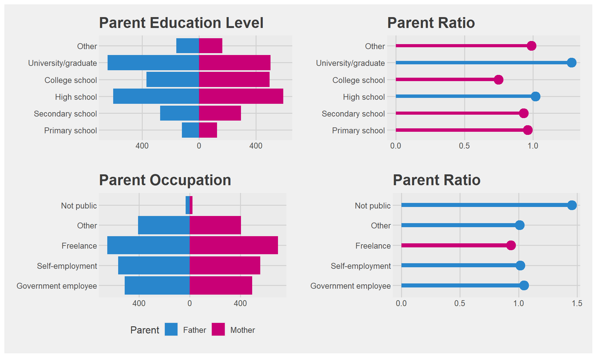
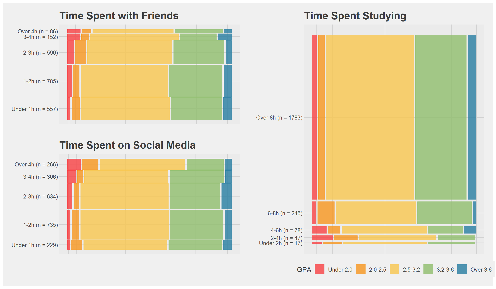
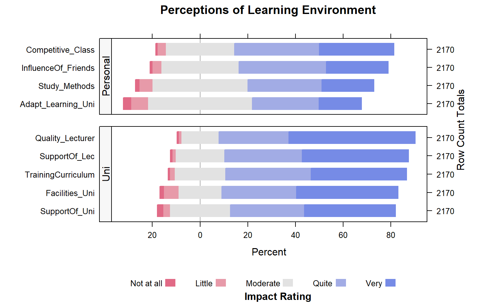
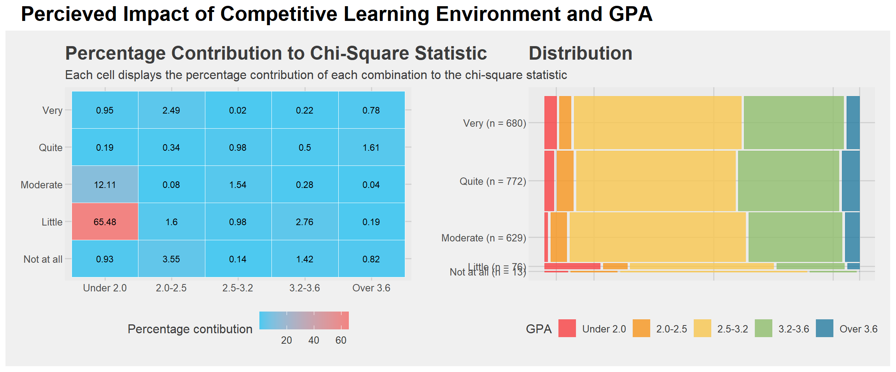
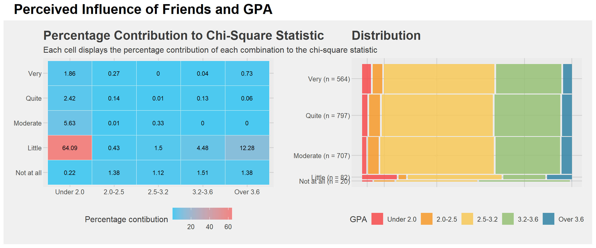

pacman::p_load(readxl, gtsummary, knitr, kableExtra, DT, ggmosaic, HH, patchwork, ggthemes, ggiraph, tidyverse)Take-Home Exercise 1: Creating enlightening and truthful data visualisations
1 Overview
Survey analysis is the process of transforming raw survey data into decision-relevant insights. It focuses on identifying patterns, trends, and relationships within responses by using descriptive methods (such as counts, percentages, and averages) as well as inferential methods (such as correlations and significance tests) to interpret results and inform decision-making.
This exercise focuses on transforming survey data into enlightening and truthful data visualisations to communicate key insights in an informative and aesthetically pleasing way.
2 Data
The dataset used for this exercise is the results of a survey on factors affecting learning outcomes of students at the University of Education - Vietnam National University, Hanoi. The respondents consist of 2170 students and alumni from March to June 2023.
The data can be classified into two groups of variables as follows:
- Demographic information of students (e.g., gender, parents qualifications and occupations)
- Subjective perceptions and assessments of the learning environment (e.g., assessment the quality of university facilities, lecturers or training curriculum)
These variables can be assessed against their grade point average, which has been grouped into 5 bands in the dataset.
3 R Packages
For this exercise, we will use the following packages:
| Package | Purpose |
|---|---|
| readxl | Provide function to read in data from excel file to dataframe |
| gtsummary | Provide functions for publication-ready analytical and summary tables of data |
| knitr | Provide functions for creating publication-ready tables |
| kableExtra | Provides functions to extend table customisation from knitr |
| DT | Provides functions to create interactive tables in R |
| ggmosaic | Provides functions to create mosaic plots |
| patchwork | Extends ggplot2 package to simplify plot composition |
| HH | Provides functions for likert scale visualisation |
| ggthemes | Provides pre-built themes for use with ggplot2 plots |
| ggiraph | Provides functions to create interactive ggplot2 charts |
| tidyverse | Provides collection of packages for importing, manipua |
4 Data Wrangling
4.1 Import Data
The following code chunk uses read_excel() from readxl package to import the excel sheet into student. glimpse() from dplyr allows us to view a compact overview of the data to ensure it has been imported correctly with all expected rows and columns.
student <- read_excel('data/student.xlsx')
glimpse(student)Rows: 2,170
Columns: 22
$ Year <dbl> 5, 5, 5, 5, 5, 5, 5, 5, 5, 5, 5, 5, 5, 5, 5, 5, 5, …
$ Gender <dbl> 2, 1, 2, 2, 1, 2, 2, 2, 2, 2, 1, 2, 2, 2, 2, 2, 2, …
$ Policy_Stu <dbl> 2, 2, 2, 2, 1, 2, 2, 2, 2, 2, 2, 2, 2, 1, 2, 2, 2, …
$ Minority_Stu <dbl> 2, 2, 2, 2, 2, 2, 2, 2, 2, 2, 2, 2, 2, 2, 2, 2, 2, …
$ Poor_Stu <dbl> 2, 2, 2, 2, 2, 2, 2, 2, 2, 2, 2, 2, 2, 2, 2, 2, 2, …
$ Father_Edu <dbl> 4, 3, 4, 5, 2, 5, 6, 5, 5, 5, 3, 3, 3, 3, 3, 4, 5, …
$ Mother_Edu <dbl> 4, 3, 4, 4, 3, 5, 5, 4, 5, 4, 3, 3, 3, 4, 3, 4, 5, …
$ Father_Occupation <dbl> 2, 2, 1, 1, 3, 1, 1, 5, 1, 3, 3, 3, 3, 3, 2, 2, 4, …
$ Mother_Occupation <dbl> 3, 4, 2, 1, 3, 2, 4, 3, 1, 3, 3, 3, 3, 3, 2, 2, 4, …
$ Time_Friends <dbl> 2, 1, 1, 2, 1, 1, 2, 2, 1, 3, 2, 2, 2, 2, 2, 1, 3, …
$ Time_SocicalMedia <dbl> 2, 3, 2, 2, 2, 3, 2, 2, 2, 2, 2, 1, 2, 2, 2, 3, 4, …
$ Time_Studying <dbl> 5, 5, 5, 5, 1, 2, 5, 5, 5, 5, 5, 5, 5, 1, 5, 5, 5, …
$ GPA <dbl> 4, 3, 4, 4, 4, 4, 3, 5, 5, 3, 3, 4, 4, 3, 5, 4, 4, …
$ Adapt_Learning_Uni <dbl> 4, 3, 4, 4, 5, 4, 4, 4, 4, 3, 4, 4, 4, 5, 4, 4, 5, …
$ Study_Methods <dbl> 4, 3, 4, 4, 5, 4, 4, 4, 4, 4, 4, 4, 4, 5, 4, 3, 5, …
$ SupportOf_Uni <dbl> 3, 3, 4, 5, 5, 5, 5, 5, 4, 5, 4, 4, 4, 5, 4, 4, 5, …
$ SupportOf_Lec <dbl> 4, 4, 4, 5, 5, 4, 5, 4, 4, 5, 4, 4, 4, 5, 4, 4, 5, …
$ Facilitie_Uni <dbl> 4, 4, 3, 5, 5, 5, 5, 4, 4, 5, 4, 4, 4, 5, 4, 3, 5, …
$ Quality_Lecturer <dbl> 4, 3, 4, 5, 5, 5, 4, 5, 5, 5, 4, 4, 4, 5, 4, 4, 5, …
$ TrainingCurriculum <dbl> 4, 3, 4, 4, 5, 4, 5, 4, 4, 5, 4, 4, 4, 5, 4, 3, 5, …
$ Competitive_Class <dbl> 3, 3, 4, 4, 4, 3, 4, 3, 4, 4, 4, 4, 4, 5, 4, 4, 5, …
$ InfuenceF_Friends <dbl> 3, 4, 4, 4, 5, 3, 5, 4, 4, 4, 4, 4, 4, 5, 4, 5, 4, …As all the data is in numerical form, we will use summary() from gtsummary package to view summary statistics of the data.
summary(student) Year Gender Policy_Stu Minority_Stu Poor_Stu
Min. :3.000 Min. :1.000 Min. :1.000 Min. :1.000 Min. :1.00
1st Qu.:4.000 1st Qu.:2.000 1st Qu.:1.000 1st Qu.:2.000 1st Qu.:2.00
Median :5.000 Median :2.000 Median :2.000 Median :2.000 Median :2.00
Mean :4.672 Mean :1.889 Mean :1.647 Mean :1.941 Mean :1.96
3rd Qu.:5.000 3rd Qu.:2.000 3rd Qu.:2.000 3rd Qu.:2.000 3rd Qu.:2.00
Max. :5.000 Max. :2.000 Max. :2.000 Max. :2.000 Max. :2.00
Father_Edu Mother_Edu Father_Occupation Mother_Occupation
Min. :1.000 Min. :1.000 Min. :1.000 Min. :1.000
1st Qu.:3.000 1st Qu.:3.000 1st Qu.:2.000 1st Qu.:2.000
Median :4.000 Median :4.000 Median :3.000 Median :3.000
Mean :3.747 Mean :3.664 Mean :2.484 Mean :2.498
3rd Qu.:5.000 3rd Qu.:5.000 3rd Qu.:3.000 3rd Qu.:3.000
Max. :6.000 Max. :6.000 Max. :5.000 Max. :5.000
Time_Friends Time_SocicalMedia Time_Studying GPA
Min. :1.000 Min. :1.000 Min. :1.000 Min. :1.0
1st Qu.:1.000 1st Qu.:2.000 1st Qu.:5.000 1st Qu.:3.0
Median :2.000 Median :3.000 Median :5.000 Median :3.0
Mean :2.274 Mean :2.836 Mean :4.719 Mean :3.3
3rd Qu.:3.000 3rd Qu.:4.000 3rd Qu.:5.000 3rd Qu.:4.0
Max. :5.000 Max. :5.000 Max. :5.000 Max. :5.0
Adapt_Learning_Uni Study_Methods SupportOf_Uni SupportOf_Lec
Min. :1.000 Min. :1.000 Min. :1.000 Min. :1.000
1st Qu.:3.000 1st Qu.:3.000 1st Qu.:3.000 1st Qu.:4.000
Median :3.000 Median :4.000 Median :4.000 Median :4.000
Mean :3.502 Mean :3.662 Mean :4.001 Mean :4.186
3rd Qu.:4.000 3rd Qu.:4.000 3rd Qu.:5.000 3rd Qu.:5.000
Max. :5.000 Max. :5.000 Max. :5.000 Max. :5.000
Facilitie_Uni Quality_Lecturer TrainingCurriculum Competitive_Class
Min. :1.000 Min. :1.000 Min. :1.000 Min. :1.000
1st Qu.:3.000 1st Qu.:4.000 1st Qu.:4.000 1st Qu.:3.000
Median :4.000 Median :5.000 Median :4.000 Median :4.000
Mean :4.073 Mean :4.329 Mean :4.128 Mean :3.935
3rd Qu.:5.000 3rd Qu.:5.000 3rd Qu.:5.000 3rd Qu.:5.000
Max. :5.000 Max. :5.000 Max. :5.000 Max. :5.000
InfuenceF_Friends
Min. :1.000
1st Qu.:3.000
Median :4.000
Mean :3.831
3rd Qu.:5.000
Max. :5.000 From the above output, there are no missing values in the data. The ranges of data are also within expectations based on the codebook which maps the values (1-6) to the corresponding survey answers, indicating that there are no errors in data entry of the survey results.
4.2 Replacing values
To make the data more readable, we will rename the values in the dataset to their corresponding survey answers. The following code chunk uses mutate() and factor() from the tidyverse to recode the numbers to the text equivalents. We also correct what seemsto be a typo in the column names using rename() from the dplyr package.
# Rename columns
student <- student %>%
rename(
Time_SocialMedia = "Time_SocicalMedia",
InfluenceOf_Friends = "InfuenceF_Friends",
Facilities_Uni = "Facilitie_Uni"
)
#rename values
student_l <- student %>%
mutate (
Year = factor(Year, levels = 1:5,
labels = c("First-year", "Second-year", "Third-year", "Fourth-year", "Graduated")),
Gender = factor(Gender, levels = 1:2,
labels = c("Male", "Female")),
across(c(Policy_Stu, Minority_Stu, Poor_Stu),
~factor(.x, levels = 1:2, labels = c("Yes", "No"))),
across(c(Father_Edu, Mother_Edu),
~factor(.x, levels = 1:6,
labels = c("Primary school", "Secondary school", "High school", "College school", "University/graduate", "Other"))),
across(c(Father_Occupation, Mother_Occupation),
~factor(.x, levels = 1:5,
labels = c("Government employee", "Self-employment", "Freelance",
"Other", "Not public"))),
across(c(Time_Friends, Time_SocialMedia),
~factor(.x, levels = 1:5,
labels = c("Under 1h", "1-2h", "2-3h", "3-4h", "Over 4h"))),
Time_Studying = factor(Time_Studying, levels = 1:5,
labels = c("Under 2h", "2-4h", "4-6h", "6-8h", "Over 8h")),
GPA = factor(GPA, levels = 1:5,
labels = c("Under 2.0", "2.0-2.5", "2.5-3.2", "3.2-3.6", "Over 3.6")),
across(c(Adapt_Learning_Uni, Study_Methods, SupportOf_Uni, SupportOf_Lec, Facilities_Uni, Quality_Lecturer, TrainingCurriculum, Competitive_Class, InfluenceOf_Friends),
~factor(.x, levels = 1:5,
labels = c("Not at all", "Little", "Moderate", "Quite", "Very")))
) %>%
relocate(GPA, .after=last_col()) #move GPA to last column The following code chunk prints uses tbl_wide_summary from gtsummary to view a summary table of results from the survey, specifically the frequency and proportion of each response.
tbl_wide_summary(student_l)| Characteristic | n | % |
|---|---|---|
| Year | ||
| First-year | 0 | 0% |
| Second-year | 0 | 0% |
| Third-year | 135 | 6.2% |
| Fourth-year | 441 | 20% |
| Graduated | 1,594 | 73% |
| Gender | ||
| Male | 240 | 11% |
| Female | 1,930 | 89% |
| Policy_Stu | 766 | 35% |
| Minority_Stu | 129 | 5.9% |
| Poor_Stu | 86 | 4.0% |
| Father_Edu | ||
| Primary school | 120 | 5.5% |
| Secondary school | 274 | 13% |
| High school | 603 | 28% |
| College school | 370 | 17% |
| University/graduate | 643 | 30% |
| Other | 160 | 7.4% |
| Mother_Edu | ||
| Primary school | 125 | 5.8% |
| Secondary school | 294 | 14% |
| High school | 592 | 27% |
| College school | 495 | 23% |
| University/graduate | 502 | 23% |
| Other | 162 | 7.5% |
| Father_Occupation | ||
| Government employee | 514 | 24% |
| Self-employment | 565 | 26% |
| Freelance | 650 | 30% |
| Other | 409 | 19% |
| Not public | 32 | 1.5% |
| Mother_Occupation | ||
| Government employee | 491 | 23% |
| Self-employment | 557 | 26% |
| Freelance | 695 | 32% |
| Other | 405 | 19% |
| Not public | 22 | 1.0% |
| Time_Friends | ||
| Under 1h | 557 | 26% |
| 1-2h | 785 | 36% |
| 2-3h | 590 | 27% |
| 3-4h | 152 | 7.0% |
| Over 4h | 86 | 4.0% |
| Time_SocialMedia | ||
| Under 1h | 229 | 11% |
| 1-2h | 735 | 34% |
| 2-3h | 634 | 29% |
| 3-4h | 306 | 14% |
| Over 4h | 266 | 12% |
| Time_Studying | ||
| Under 2h | 17 | 0.8% |
| 2-4h | 47 | 2.2% |
| 4-6h | 78 | 3.6% |
| 6-8h | 245 | 11% |
| Over 8h | 1,783 | 82% |
| Adapt_Learning_Uni | ||
| Not at all | 70 | 3.2% |
| Little | 152 | 7.0% |
| Moderate | 954 | 44% |
| Quite | 606 | 28% |
| Very | 388 | 18% |
| Study_Methods | ||
| Not at all | 33 | 1.5% |
| Little | 120 | 5.5% |
| Moderate | 869 | 40% |
| Quite | 674 | 31% |
| Very | 474 | 22% |
| SupportOf_Uni | ||
| Not at all | 51 | 2.4% |
| Little | 61 | 2.8% |
| Moderate | 553 | 25% |
| Quite | 675 | 31% |
| Very | 830 | 38% |
| SupportOf_Lec | ||
| Not at all | 20 | 0.9% |
| Little | 28 | 1.3% |
| Moderate | 448 | 21% |
| Quite | 706 | 33% |
| Very | 968 | 45% |
| Facilities_Uni | ||
| Not at all | 36 | 1.7% |
| Little | 131 | 6.0% |
| Moderate | 399 | 18% |
| Quite | 677 | 31% |
| Very | 927 | 43% |
| Quality_Lecturer | ||
| Not at all | 16 | 0.7% |
| Little | 24 | 1.1% |
| Moderate | 342 | 16% |
| Quite | 636 | 29% |
| Very | 1,152 | 53% |
| TrainingCurriculum | ||
| Not at all | 12 | 0.6% |
| Little | 45 | 2.1% |
| Moderate | 465 | 21% |
| Quite | 779 | 36% |
| Very | 869 | 40% |
| Competitive_Class | ||
| Not at all | 13 | 0.6% |
| Little | 76 | 3.5% |
| Moderate | 629 | 29% |
| Quite | 772 | 36% |
| Very | 680 | 31% |
| InfluenceOf_Friends | ||
| Not at all | 20 | 0.9% |
| Little | 82 | 3.8% |
| Moderate | 707 | 33% |
| Quite | 797 | 37% |
| Very | 564 | 26% |
| GPA | ||
| Under 2.0 | 73 | 3.4% |
| 2.0-2.5 | 109 | 5.0% |
| 2.5-3.2 | 1,189 | 55% |
| 3.2-3.6 | 692 | 32% |
| Over 3.6 | 107 | 4.9% |
4.3 Remove unnecessary values in Year
As seen in the table above, no students from first- or second-year responded to the survey. Hence, we will remove these from the dataset as they are not relevant using droplevels()
student_l <-droplevels(student_l)
tbl_wide_summary(student_l, include = Year)| Characteristic | n | % |
|---|---|---|
| Year | ||
| Third-year | 135 | 6.2% |
| Fourth-year | 441 | 20% |
| Graduated | 1,594 | 73% |
5 Survey Responses
The full survey questions from the codebook as well as the corresponding response values used for this exercise are appended below for reference.
| Year | What year student are you in? | Third-year | Fourth-year | Graduated | - | - | - |
| Gender | What is your gender? | Male | Female | - | - | - | - |
| Policy_Stu | Are you a student on policy government support? | Yes | No | - | - | - | - |
| Minority_Stu | Are you a minority student? | Yes | No | - | - | - | - |
| Poor_Stu | Is your family a poor household? | Yes | No | - | - | - | - |
| Father_Edu | What educational background of your father? | Primary school | Secondary school | High school | College school | University/graduate | Other |
| Mother_Edu | What educational background of your mother? | Primary school | Secondary school | High school | College school | University/graduate | Other |
| Father_Occupation | What is your father’s occupation status? | Government employee | Self-employment | Freelance | Other | Not public | - |
| Mother_Occupation | What is your mother’s occupation status? | Government employee | Self-employment | Freelance | Other | Not public | - |
| Time_Friends | How much time do you spend hanging out with your friends on average per day? | Under 1h | 1-2h | 2-3h | 3-4h | Over 4h | - |
| Time_SocialMedia | How much time do you spend using social media on average per day? | Under 1h | 1-2h | 2-3h | 3-4h | Over 4h | - |
| Adapt_Learning_Uni | How level are you adapting to the learning environment at the university? | Not at all | Little | Moderate | Quite | Very | - |
| Study_Methods | How level are your studying methods affecting your outcomes? | Not at all | Little | Moderate | Quite | Very | - |
| SupportOf_Uni | How level is the university’s support for you? | Not at all | Little | Moderate | Quite | Very | - |
| SupportOf_Lec | How level is the lecturer’s support (affecting your outcomes)? | Not at all | Little | Moderate | Quite | Very | - |
| Facilities_Uni | How responsive are the university facilities? | Not at all | Little | Moderate | Quite | Very | - |
| Quality_Lecturer | How level are the quality of university lecturers? | Not at all | Little | Moderate | Quite | Very | - |
| TrainingCurriculum | How level is suitable of the university curriculum? | Not at all | Little | Moderate | Quite | Very | - |
| Competitive_Class | How level is the competing class affecting you? | Not at all | Little | Moderate | Quite | Very | - |
| InfluenceOf_Friends | How the level are friends in class affecting your outcomes? | Not at all | Little | Moderate | Quite | Very | - |
6 Demographic visualisations
First, we will visualise the demographic-related characteristics observed in the survey. We are interested both in understanding the demographic makeup of the survey respondents, as well as spotting any potentially interesting relationships between the survey variables and student outcomes (GPA).
6.1 EDA 1: Parent Characteristics
We will construct a bi-directional horizontal bar graph (similar to a population pyramid) to allow us to simultaneously visualise the education/occupation of both parents of survey respondents. We will also construct a lollipop graph to visualise the father-to-mother ratio within a category, allowing us to more clearly highlight any imbalances. The code chunks below extract the relevant columns and prepare the data in the necessary format for the graphs.
For the bar graphs, pivot_longer() from tidyr package is used to collapse the dataframe into 2 columns, one which labels each row with the original column names (Variable), and the other containing the original cell value of that column (Answer). count() from dplyr package then groups the data by each unique combination of Variable and Answer and counts each occurance, and outputs a summary table with column n representing the frequency. Finally, mutate() is used to create a column labelling the variables with ‘Father’ or ‘Mother’ and converts the frequency of ‘Fathers’ for a category to a negative number to allow bar chart of ‘Father’ to extend to the left of the x-axis, while ‘Mother’ will remain plotted on the right side.
For the lollipop graphs, pivot_longer() from tidyr package is used to create columns ‘Father’ and ‘Mother’, populating values with the frequency values (n) derived earlier. mutate() is then used to calculate the ratio of fathers to mothers for a particular category.
parents_edu <- student_l %>%
select(Father_Edu,
Mother_Edu) %>%
pivot_longer(cols = everything(), names_to = "Variable", values_to = "Answer") %>%
count(Variable, Answer) %>%
mutate(
Parent = ifelse(Variable == "Father_Edu", "Father", "Mother"),
Population = ifelse(Parent == "Father", -n, n)
)
parents_edu_ratio <- parents_edu %>%
select(Answer, Parent, n) %>%
pivot_wider(names_from = Parent, values_from = n) %>%
mutate(Ratio = Father / Mother,
ratio_color = ifelse(Ratio>1, "Father", "Mother")) %>%
arrange(Ratio)parents_occ <- student_l %>%
select(Father_Occupation,
Mother_Occupation) %>%
pivot_longer(cols = everything(), names_to = "Variable", values_to = "Answer") %>%
count(Variable, Answer) %>%
mutate(
Parent = ifelse(Variable == "Father_Occupation", "Father", "Mother"),
Population = ifelse(Parent == "Father", -n, n)
)
parents_occ_ratio <- parents_occ %>%
select(Answer, Parent, n) %>%
pivot_wider(names_from = Parent, values_from = n) %>%
mutate(Ratio = Father/ Mother,
ratio_color = ifelse(Ratio>1, "Father", "Mother")) %>%
arrange(Ratio)The following code chunk then defines the functions to create the respective graphs. For the bar chart, we will use geom_col() from ggplot2. scale_y_continuous(labels = abs) ensures that the x-axis labels are in absolute values, given the population of Mothers/Fathers represented on the chart are both positive numbers. This is applied to the y axis in the code given that we use coord_flip() to present the chart as a horizontal bar chart instead of the vertical column chart.
To create the lollipop chart, we use a combination of geom_col() for the ‘stick’ of the lollipop and geom_point() for the ‘dot’ at the end. Both functions are from ggplot2 package.
get_pyramid_plot <- function(df, title, colors, show_legend=FALSE){
plot<-ggplot(df, aes(x = Answer, y = Population, fill = Parent)) +
geom_col(show.legend=show_legend) +
coord_flip() +
scale_y_continuous(labels = abs) +
labs(title = title) +
theme_fivethirtyeight() +
scale_fill_manual(values = colors)
return(plot)
}
get_lollipop_plot <- function(df, title, colors){
plot <- ggplot(df, aes(x = Answer, y = Ratio, fill = ratio_color)) +
geom_point(aes(color = ratio_color), size=5, show.legend=FALSE)+
geom_col(show.legend = FALSE, width=0.2) +
coord_flip() +
labs(title = title) +
theme_fivethirtyeight() +
scale_fill_manual(values = colors) +
scale_color_manual(values=colors)
} 6.1.1 Visualisation
Code
colors=c("Mother" = "#c90076", "Father" = "#2986cc")
edu_plot <- get_pyramid_plot(parents_edu, "Parent Education Level", colors)
edu_ratio <- get_lollipop_plot(parents_edu_ratio, "Parent Ratio", colors)
occ_plot <- get_pyramid_plot(parents_occ, "Parent Occupation", colors, TRUE)
occ_ratio <- get_lollipop_plot(parents_occ_ratio, "Parent Ratio", colors)
(edu_plot + edu_ratio) / (occ_plot + occ_ratio)
Insights
The distribution of occupations is roughly symmetrical between fathers and mothers, with the ratio of fathers to mothers in each group lying close to 1, except for ‘Not Public’.
On the other hand, there are fewer college-educated fathers than mothers, but more university-educated fathers than mothers. Otherwise, for other levels of education the ratio of fathers to mothers is about equal.
This could indicate a trend among the parent’s generation that women were more likely to conclude education at college level. This could be an avenue for further inquiry, particularly if there is a correlation between parental education level and student outcomes.
The gender dimension of this discrepency also could be worth considering for further research, such as whether mother/father college vs uni-level education affects female/male students differently.
6.2 EDA 2: Student Characteristics
We will next use mosaic plots to visualise the relationship between the next survey variables and student outcomes (GPA) through the height and width of the rectangles in the plot. This will give us some initial sensing of whether there variables are likely to be associated with or independent from student outcomes.
Additional data processing is not needed to prepare the data for the mosaic plot. However, to include information of how many data points are present for each category of the variable of interest, we use group_by() and mutate() to create a new column for use as labels with the count of datapoints in each category. To create the mosaic plot, geom_mosaic() from ggmosaic package is used as ggplot2 does not have a native function to create mosaic plots.
make_mosaic_plot <- function(variable, titletext, values = c("#f94144", "#f8961e", "#f9c74f", "#90be6d", "#277da1"), show_legend=FALSE){
plot_data <- student_l %>%
group_by({{variable}}) %>%
mutate(labeled_var = paste0({{variable}}, " (n = ", n(), ")")) %>%
ungroup() %>%
mutate(labeled_var = forcats::fct_reorder(labeled_var, as.numeric({{variable}})))
ggplot(plot_data) +
geom_mosaic(aes(x = product(labeled_var), fill = GPA), show.legend = show_legend) +
theme_fivethirtyeight() +
labs(title = titletext) +
scale_fill_manual(values = values) +
coord_flip() +
theme(axis.text.x = element_blank())
}Code
p_gender <- make_mosaic_plot(Gender, "Gender")
p_minority <- make_mosaic_plot(Minority_Stu, "Minority Students")
p_poor <- make_mosaic_plot(Poor_Stu, "Poor Students")
p_policy <- make_mosaic_plot(Policy_Stu, "Students on Policy Government Support",
show_legend=TRUE)
((p_gender/p_minority) | (p_poor/p_policy)) +
plot_annotation(
title = "Distribution of student outcomes by demographic characteristics",
theme = theme(plot.title = element_text(size = 24, face = "bold")))
Insights
There is a pronounced imbalance in response distribution for binary survey items.
For gender, minority students, and poor students, the minority response group makes up around 10% or less of responses, with counts less than 250.
- These extremely skewed distributions mean that outliers may have greater influence on distirbution of GPA within the minority response group. Significant correlations with GPA may need to be taken with a grain or salt, or require further data collection to corroborate results.
For students on policy government support, the proportion of students who achieve a GPA of less than 2.5 is around the same as students not on government support. A smaller proportion of students receiving support also have GPAs from 3.2 and above than their counterparts.
This could indicate that receiving government support may be associated with poorer grades. This warrants further testing to confirm.
6.3 EDA 3: Student Habits
The functions created earlier are used again here to create similar mosaic plot visualisation for responses on how students spend their time.
Code
p_friend <- make_mosaic_plot(Time_Friends, "Time Spent with Friends")
p_sm <- make_mosaic_plot(Time_SocialMedia, "Time Spent on Social Media")
p_study <- make_mosaic_plot(Time_Studying, "Time Spent Studying", show_legend = TRUE)
(p_friend / p_sm ) | p_study 
Insights
Most students seem to spend little to a moderate amount of time (3 hours or less) with friends or on social media. A large majority of time appears to be spent on studying, with around 80% of respondents indicating that they spend over 8 hours a day studying.
Generally, as time spent studying increases, poor student outcomes (GPA below 2.5) appear to decrease and good outcomes (GPA above 3.2) appear to increase.
- Statistical testing would be useful to confirm this observation.
Generally, good student outcomes seem largely independent of time spent with friends or on social media (aside from a marked decrease in good outcomes if students spend over 4 hours on social media a day). However, poor student outcomes appears to increase with time spent with friends or on social media.
- Statistical testing would be useful to confirm this observation.
7 Perceptions of learning environment
Next, we will also visualise the responses of students regarding their perceptions of how the learning environment affects their student outcomes using a Likert chart. Unlike a standard bar chart, the Likert chart centers responses around a neutral midpoint to better visualise the direction and intensity of sentiments from survey data.
7.1 Data preparation
First, we create the table perceptions to count the number of occurences of each response per question. Using pivot_longer(), the variables are gathered into a single column to allow counting by group for each variable-response pair. count() will count the occurence of each pair, and pivot_wider() converts the final result to a table to display the count of each response for each study variable.
perceptions <- student_l %>%
select(Adapt_Learning_Uni, Study_Methods, SupportOf_Uni, SupportOf_Lec, Facilities_Uni, Quality_Lecturer, TrainingCurriculum, Competitive_Class, InfluenceOf_Friends) %>%
pivot_longer(cols = everything(), names_to = "Variable", values_to = "Answer") %>%
count(Variable, Answer) %>%
pivot_wider(names_from = Answer, values_from = n, values_fill = 0)
kable(perceptions)| Variable | Not at all | Little | Moderate | Quite | Very |
|---|---|---|---|---|---|
| Adapt_Learning_Uni | 70 | 152 | 954 | 606 | 388 |
| Competitive_Class | 13 | 76 | 629 | 772 | 680 |
| Facilities_Uni | 36 | 131 | 399 | 677 | 927 |
| InfluenceOf_Friends | 20 | 82 | 707 | 797 | 564 |
| Quality_Lecturer | 16 | 24 | 342 | 636 | 1152 |
| Study_Methods | 33 | 120 | 869 | 674 | 474 |
| SupportOf_Lec | 20 | 28 | 448 | 706 | 968 |
| SupportOf_Uni | 51 | 61 | 553 | 675 | 830 |
| TrainingCurriculum | 12 | 45 | 465 | 779 | 869 |
We will also add a column Type which will differentiate personal factors (i.e., ability to adapt to the university learning environment, studying methods, competition within the class, and friends) from university factors (e.g., level of support from the university or quality of uni lecturers).
Type= c("Personal","Personal","Uni", "Personal","Uni", "Personal", "Uni", "Uni", "Uni")
perceptions2 <- cbind(perceptions, Type)7.2 EDA 4: Perceptions of Learning Environment Impact on Student Outcomes
To create the likert chart, likert() from HH package is used.
Code
likert(Variable ~.| Type,
data=perceptions2,
layout=c(1,2),
scales=list(y=list(relation="free")),
between=list(y=1),
strip.left=strip.custom(bg="gray97"),
strip=FALSE,
ylab=NULL,
as.percent=TRUE,
positive.order = TRUE,
main = list("Perceptions of Learning Environment",
x=unit(.55, "npc")),
sub = list("Impact Rating",x=unit(.57, "npc"))
)
Insights
Generally, students feel that external factors from the university such as support from lecturers have a significant impact on their learning outcomes, moreso than the personal factors identified in the survey.
Perceptions of the learning environment at the university (such as lecturer quality and adequacy of university facilities) are also positive.
The above are useful to contrast against the correlation between these responses with GPA, to identify if there are discrepencies between percieved importance of/satisfaction with these factors and their actual impact on student outcomes.
8 Visualising Relationship Between Factors and Student Performance
8.1 Calculating Chi-Squared Value
We will use a chi-squared test to measure if there is any significant associations between the study variables and student performance. This is particularly appropriate given that the survey question format has lead to all the data being in categorical format.
Given that we will need to perform the chi-square test for multiple variables against GPA, the following code chunk builds a function to perform the chi test in R using chisq.test() from base R stats package, and then return relevant statistics from the test.
corr_vars <- student_l %>%
select(-GPA) %>%
colnames()
perform_chi_test <- function(variable) {
# Create a contingency table
contingency_table <- table(student_l$GPA, student_l[[variable]])
# Perform the chi-squared test
chi_result <- chisq.test(contingency_table)
# Return relevant results
return(data.frame(
Variable = variable,
Chi_Squared = chi_result$statistic,
DF = chi_result$parameter,
P_Value = chi_result$p.value
))
}The following code chunk then uses lapply() to apply the function we just built across all columns (except for GPA) and convert the results from a list to a dataframe for visualisation.
# Apply the function to all specified variables using lapply
chisq_list <- lapply(corr_vars, perform_chi_test)
# Combine the results into a single data frame
chisq_df <- do.call(rbind, chisq_list)8.1.1 Datatable
Below is an interactive datatable of the results to allow sorting by variable name, or chi-squared value, etc.
datatable(chisq_df, rownames=FALSE)8.1.2 Create graph
The following code chunk first uses mutate() to create a column differentiating the significance levels of each result. This will allow us to easily identify which are the significant associations when visualising the results of the test later.
We will then use a bar chart to visualise the chi-square values as the differences in length of the bars will allow us to easily compare the relative strength of associations found for each variable.
geom_col_interactive() from ggiraph package is used to create the chart. We will use the interactive functionality to coordinate views with the next chart we will construct.
chisq_plot_df <- chisq_df %>%
mutate(
Significance = case_when(
P_Value < 0.01 ~ "p < 0.01",
P_Value < 0.05 ~ "p < 0.05",
TRUE ~ "p >= 0.05"
),
Significance = factor(Significance, levels = c("p < 0.01", "p < 0.05", "p >= 0.05"))
)
chisq_plot <- ggplot(chisq_plot_df, aes(x = reorder(Variable, Chi_Squared), y = Chi_Squared, fill = Significance)) +
geom_col_interactive(
aes(data_id = Variable,
tooltip = c(paste0(Variable, "\n Chi-Square Value = ", round(Chi_Squared,1))))) +
coord_flip() +
scale_fill_manual(values = c(
"p < 0.01" = "#679436",
"p < 0.05" = "#a5be00",
"p >= 0.05" = "grey"
)) +
labs(
title = "Chi-Square Values by Variable",
subtitle = "Higher values indicate stronger association with GPA",
x = "",
y = "Chi-Square Statistic",
fill = "Significance Level"
) +
theme_fivethirtyeight()8.2 Calculating Spearman’s Rank Correlation
We will also compute Spearman’s Rank Correlation. Unlike the chi-square test, spearman’s rank correlation looks for a monotonic relationship between two ranked variables, meaning as one variable increases, the dependent variable will increase or decrease, though this may not be at a constant rate (unlike Pearson’s correlation). This means that it can indicate whether certain variables consistently leads to higher/lower GPA, even if the change in GPA is not linear.
Similar to the process for calculating the chi-square statistic before, the following code chunks create a function to perform the spearman rank correlation test in r using cor.test() from base R’s stats package. We then use lapply() to utilise the function across all relevant variables and then convert the results to a dataframe for visualisation.
perform_src_test <- function(variable) {
# Perform the spearman's rank correlation test
src_result <- cor.test(as.numeric(student_l[[variable]]), as.numeric(student_l$GPA), method='spearman')
# Return relevant results
return(data.frame(
Variable = variable,
Rho = src_result$estimate,
P_Value = src_result$p.value
))
}While we performed the chi-square test of association on all study variables, we will remove the binary variables as well as Year, Father_Occupation and Mother_Occupation as they are not ordinal variables and therefore they are not appropriate for this test.
# Define variables of interest
corr_vars <- student_l %>%
select(-GPA, -Year, -Gender, -Policy_Stu, -Minority_Stu, -Poor_Stu, -Father_Occupation, -Mother_Occupation) %>%
colnames()
# Apply the function to all specified variables using lapply
src_list <- lapply(corr_vars, perform_src_test)
# Combine the results into a single data frame
src_df <- do.call(rbind, src_list)8.2.1 Datatable
Below is an interactive datatable of the results to allow sorting by variable name, or rho, etc.
src_df %>% datatable(rownames=FALSE)8.2.2 Create graph
Before creating the graph, we create a column abs_rho to convert all negative rho values to positive. This would allow us to more easily compare the magnitude of rho to identify the variables with the strongest monotonic relationship with GPA during visualisation.
To ensure we can distinguish negative from positive correlations, as well as significant from insignificant results, we also create a column Significance to label the correlation direction as well as the level of significance. We will therefore be able to colour code the different categories of results appropriately during visualisation.
src_plot_df <- src_df %>%
mutate(
abs_rho = abs(Rho),
Significance = case_when(
P_Value < 0.01 & Rho > 0 ~ "Positive Correlation, p < 0.01",
P_Value < 0.05 & Rho > 0 ~ "Positive Correlation, p < 0.05",
P_Value < 0.01 & Rho < 0 ~ "Negative Correlation, p < 0.01",
P_Value < 0.05 & Rho < 0 ~ "Negative Correlation, p < 0.05",
TRUE ~ "p >= 0.05"
),
Significance = factor(Significance, levels = c("Positive Correlation, p < 0.01", "Positive Correlation, p < 0.05", "Negative Correlation, p < 0.01", "Negative Correlation, p < 0.05", "p >= 0.05"))
)The following code chunk builds the plot for the visualisation of rho values as a bar chart. Again, geom_col_interactive() is used to sync views with the earlier plot of chisquare values.
src_plot <- ggplot(src_plot_df, aes(x = reorder(Variable, abs_rho), y = abs_rho, fill = Significance)) +
geom_col_interactive(
aes(data_id = Variable,
tooltip = c(paste0(Variable, "\n Rho = ", round(Rho,3))))) +
coord_flip() +
scale_fill_manual(values = c(
"Positive Correlation, p < 0.01" = "#dd1c1a",
"Positive Correlation, p < 0.05" = "#ea7317",
"Negative Correlation, p < 0.01" = "#2364aa",
"Negative Correlation, p < 0.05" = "#6f9ceb",
"p >= 0.05" = "grey"
)) +
labs(
title = "Spearman Rank Correlation Values by Variable",
subtitle = "Higher values indicate stronger monotonic relationship with GPA",
x = "",
y = "Chi-Square Statistic",
fill = "Significance Level"
) +
guides(fill=guide_legend(nrow=3)) +
theme_fivethirtyeight()8.3 EDA 5: Association/Correlation between study variables and student outcomes (GPA)
Using giraph() from ggiraph package, we then display the interactive plots and use opts_hover() and opts_hover_inv() to highlight the variable in both graphs when the cursor hovers over the relevant bar. This allows for easier identification of the variable across both graphs, as well as comparison of the rank and significance from using either method to measure association/correlation.
Code
girafe(code = print(chisq_plot + src_plot),
width_svg = 14,
height_svg = 6,
options = list(
opts_hover(css = "stroke: #202020;"),
opts_hover_inv(css = "opacity:0.2;")
)
)
Insights
The chi-square test finds that there is a statistically significant association between all study variables at the 95% confidence level. However, for binary response variables, the strength of association appears the lowest.
Spearman rank correlation indicates there is a statistically significant monotonic relationship between most variables and GPA at the 95% confidence. The relationships are also mostly positive, except for the relationship with either parent’s occupation, time spent with friends, and time spent on social media which are negatively correlated with GPA.
Across both graphs, parent’s level of education and perception of importance of own study methods to student outcomes are among the top 5 strongly associated/correlated variables with GPA. This suggests these variables are among the most influential on student outcomes and further study into the reasons for this association/correlation may be useful to inform policy decisions to improve student outcomes.
- Notably, mother’s level of education/occupation has a stronger correlation/association with higher GPA than father’s level of education/occupation. It may be of interest for further research to understand why this discrepancy exists and how to leverage this association to improve student outcomes, particularly in the context of the earlier observation that fewer mothers achieve a university-level education than fathers.
On the other hand, the variables Competitive_Class and InfluenceOf_Friends were found to have a statistically significant association with GPA, but there is not a monotonic relationship with GPA. As such, this may warrant further investigation to understand the nature of the relationship between these variables and student outcomes.
9 Investigating associations which are non-monotonic with GPA
The following code chunk creates a function to perform the following:
- Calculate contributions of each cell to the final chi-square statistic. This will allow us to identify the specific key associations identified by the chi-square test, based on which cells have the highest percentage contribution to the final statistic. This is useful given we have confirmed earlier that the association is not a monotonic relationship.
- First the contingency table is created between GPA and the variable of interest. The chisquare test is performed using
chisq.test()and the relevant statistics are extracted from the result - Contribution to the chi-square statistic is calculated and normalised to a percentage of the final statistic
- The above process was based off the code to perform similar calculations by Thevapalan (2024).
- First the contingency table is created between GPA and the variable of interest. The chisquare test is performed using
- Create a heatmap to visualise the percentage contribution of each cell using
geom_tile()from ggplot2 package. - Create a mosaic plot to visualise the distribution of GPA and the variable of interest within the responses, using the function created earlier in EDA 2: Student Characteristics. This will allow us to understand the direction of the association (Eg is the proportion higher or lower than expected), as well as understand the sample size of the group.
get_chisq_contributions <- function(variable, mosaic_var) {
# Create contingency table
contingency_table <- table(student_l$GPA, student_l[[variable]])
# Perform chi_square test and extract observed/expected counts
chi_result <- chisq.test(contingency_table)
observed_counts <- chi_result$observed
expected_counts <- chi_result$expected
# Calculate contribution to chi-square statistic
contributions <- (observed_counts - expected_counts)^2 / expected_counts
# Calculate percentage contributions
total_chi_square <- chi_result$statistic
pct_contributions <- 100 * contributions / total_chi_square
pct_df <- as.data.frame(pct_contributions)
colnames(pct_df) <- c("GPA", "Category", "Contribution")
# Create heatmap
heatmap <- ggplot(pct_df, aes(x = GPA, y = Category, fill = Contribution)) +
geom_tile(color = "white") +
scale_fill_gradient(low = "#4cc9f0", high = "#f28482") +
geom_text(aes(label = round(Contribution, 2)), size = 3) +
theme_fivethirtyeight() +
labs(title = "Percentage Contribution to Chi-Square Statistic",
subtitle = "Each cell displays the percentage contribution of each combination to the chi-square statistic",
fill = "Percentage contibution")
# Create mosaic plot
mosaic <- make_mosaic_plot({{mosaic_var}}, "Distribution", show_legend=TRUE)
plot <- heatmap + mosaic
return(plot)
}9.1 EDA 6: Non-monotonic association between study variables and student outcomes (GPA)
get_chisq_contributions("Competitive_Class", Competitive_Class) +
plot_annotation(
title = "Percieved Impact of Competitive Learning Environment and GPA",
theme = theme(plot.title = element_text(size = 20, face = "bold")))
get_chisq_contributions("InfluenceOf_Friends", InfluenceOf_Friends) +
plot_annotation(
title = "Perceived Influence of Friends and GPA",
theme = theme(plot.title = element_text(size = 20, face = "bold")))
Insights
For both Competitive_Class and InfluenceOf_Friends, the key association is that perceiving that the variable has little impact on the student’s outcomes is associated with very poor GPA results of under 2.0.
Interestingly, this association with GPA below 2.0 does not hold true for those who answered “Not at all”. However, this may be due to the extremely low sample size of respondents who answered “Not at all” to either question.
Given the lack of other significant associations and the nature of this association, we can likely disregard these variables as an area of interest for further research or as a starting point to inform strategies to improve student outcomes.
10 Conclusion
Through this exercise, we have created data visualisations to understand patterns in the distribution of responses from the survey data and its relationship with the key dependent variable of the survey, GPA as a measurement of student outcomes. We have also visualised the results of applying inferential methods to the survey data like correlation tests to highlight significant associations and correlations, and identify the most influential variables. This process has allowed us to communicate key insights which are useful as starting points for further research into the cause of certain observations and possible areas to prioritise or dis when considering policy recommendations on how to improve student outcomes.
11 References
Thevapalan, A. (2024, August 29). Chi-square test in R: A complete guide | datacamp. Datacamp. https://www.datacamp.com/tutorial/chi-square-test-r
11.1 Data Source
Ngoc Le, Diep (2024), “Dataset about VNU students”, Mendeley Data, V1, doi: 10.17632/23ppcdbmhc.1